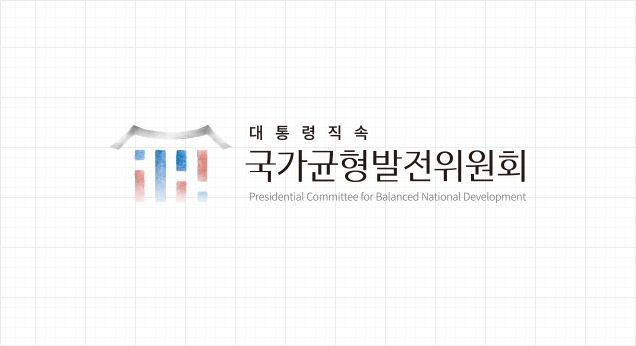
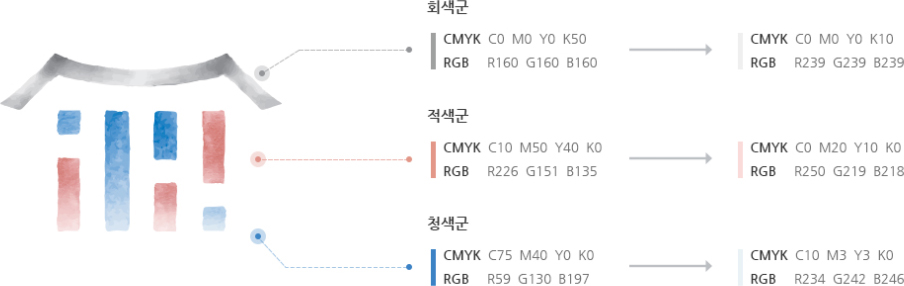
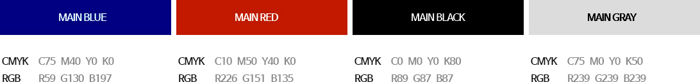
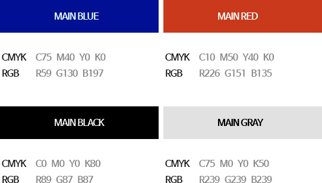

대통령직속 국가균형발전위원회 CI 소개
포용ㆍ발전ㆍ균형
<건곤감리>의 형태에서 모티브를 가져와 각 지역이 서로 조화롭게 포용하고 균형있게 발전하는 모습을 상징했다.
서로 다른 길이의 요소를 가지고 있지만 하나의 지붕 아래 같은 길이로 존재하는 요소들로 국가균형발전위원회가 추구하는 균형잡힌 비전을 나타낸다.
Blue와 Red의 조합은 태극의 색으로 대한민국을 상징하며 Gray는 균형과 중립, 포용의 의미를 각각 담고 있다.
CI 색상
- FULL COLOR
- FULL COLOR 심볼마크의 경우 청색군, 적색군, 회색군의 최고명도와 최저명도 값을 지정하여 컬러활용에 참고할 수 있으나, 고유의 질감 표현을 위해 심볼마크 자체에 활용된 중간색들을 임의로 변경 제작할 수 없다.

- ONE COLOR
- ONE COLOR 심볼마크의 경우 제시된 컬러 사용을 원칙으로 하나, 경우에 따라 본 컬러 적용이 불가할 경우 별도의 채도 사용을 금지하고, 회색조 및 흰색의 심볼마크를 사용한다.

